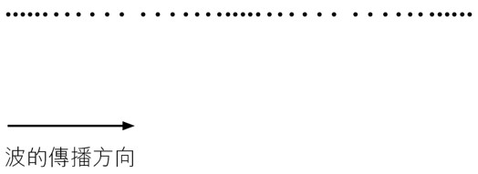

在波動學中，波可分為橫波及縱波。兩者均對粒子的振動呈不同影響；
粒子的振動方向 垂直於 波的傳播方向、波形包含一連串波峯和波谷。
橫波和波上的粒子有以下關係：
| 波動 | 粒子運動 | |
| 振幅 | 粒子的振幅 = 波的振幅，（波上所有粒子的振幅相同，也與波的振幅相同） |
|
| 週期 | 粒子的周期 = 波的周期，（波上所有粒子以相同的週期和頻率振動） |
|
| 頻率 | 粒子的頻率 = 波的頻率，（波上所有粒子以相同的週期和頻率振動） |
|
| 波長 | - |
|
| 波速率 | - |
|
粒子的振動方向 平行於 波的傳播方向、波形包含一連串密部與疏部。

縱波和波上的粒子有以下關係：
| 波動 | 粒子運動 | |
| 振幅 | 波動中振動部分與平衡位置的最大距離 |
粒子振動時與平衡位置的最大距離 |
| 週期 | 產生一個完整波所需的時間 | 粒子完成一次完整振動所需的時間 |
| 頻率 | 一秒內產生的完整波數目 |
粒子在一秒內振動的次數 |
| 波長 | 波形重複的最短距離 |
- |
| 波速率 | 波在一秒內行進的距離 |
- |